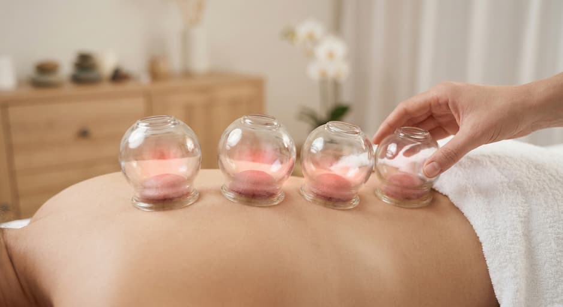
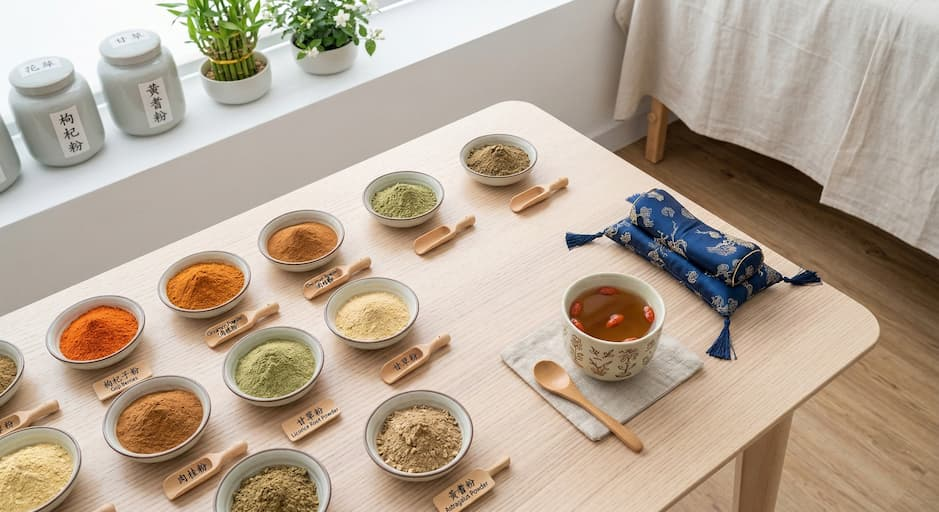

長期對電腦手機，肩頸肌肉勞損劇痛
坐姿不良導致腰椎錯位、坐骨神經痛
網球肘、媽媽手、膝蓋無力退化
氣血不通引發偏頭痛、睡眠質素差
結合傳統中醫學智慧與現代解剖學，為您提供最安全、最見效的綜合治療方案。
精準點穴，深層放鬆繃緊肌肉。配合獨家正骨手法，將錯位的脊椎及關節復位，即時舒緩壓迫神經帶來的痛楚。

透過刺激特定穴位，疏通經絡氣血，達到「通則不痛」的效果。配合拔罐驅除體內濕氣寒毒，消炎止痛效果顯著。

把脈問診，辨證論治。針對個人體質處方濃縮中藥粉，調理內在臟腑功能，解決失眠、腸胃不適、婦科及亞健康問題。
香港政府註冊中醫
編號 004563
劉志明中醫師擁有超過三十年的豐富臨床經驗。診所扎根香港旺角，我們深明都市人生活節奏急促，面對各種勞損與痛症往往求醫無門或反覆發作。
劉醫師堅持「辨證求因，審因論治」的原則，結合傳統推拿手法、精準針灸與現代化診所衛生標準，致力為每位病人提供一個舒適、安心、且療效顯著的治癒空間。
無數病人的康復笑容，是我們最大的推動力。
原本右手痛到著衫都困難，睇過西醫食止痛藥治標不治本。經朋友介紹嚟搵劉醫師推拿加針灸，做咗3次已經有好大改善，依家完全可以舉高隻手！
陳先生 (55歲)
治療項目：五十肩推拿針灸
做IT經常坐姿唔好搞到腰骨痛，甚至痺落隻腳。醫師檢查好仔細，啪骨啪幾下嗰下聽到『卡』一聲，即刻覺得條腰鬆返，痛楚減咗八成，極力推薦！
李小姐 (32歲)
治療項目：腰椎復位
一直有偏頭痛問題，嚟做頭部推拿同把脈開藥。診所環境好好，唔會有陣好濃烈嘅中藥味，好乾淨。醫師解釋病情好詳細，唔會拖症。
Wong Tai (40歲)
治療項目：內科調理、推拿
香港九龍旺角彌敦道 720 號
家樂樓 1 樓 102 室
港鐵旺角站 B1 出口步行 2 分鐘直達，大廈設有電梯
星期一至六：10:00 AM - 8:00 PM
星期日及公眾假期：敬請預約
+852 9668 0071